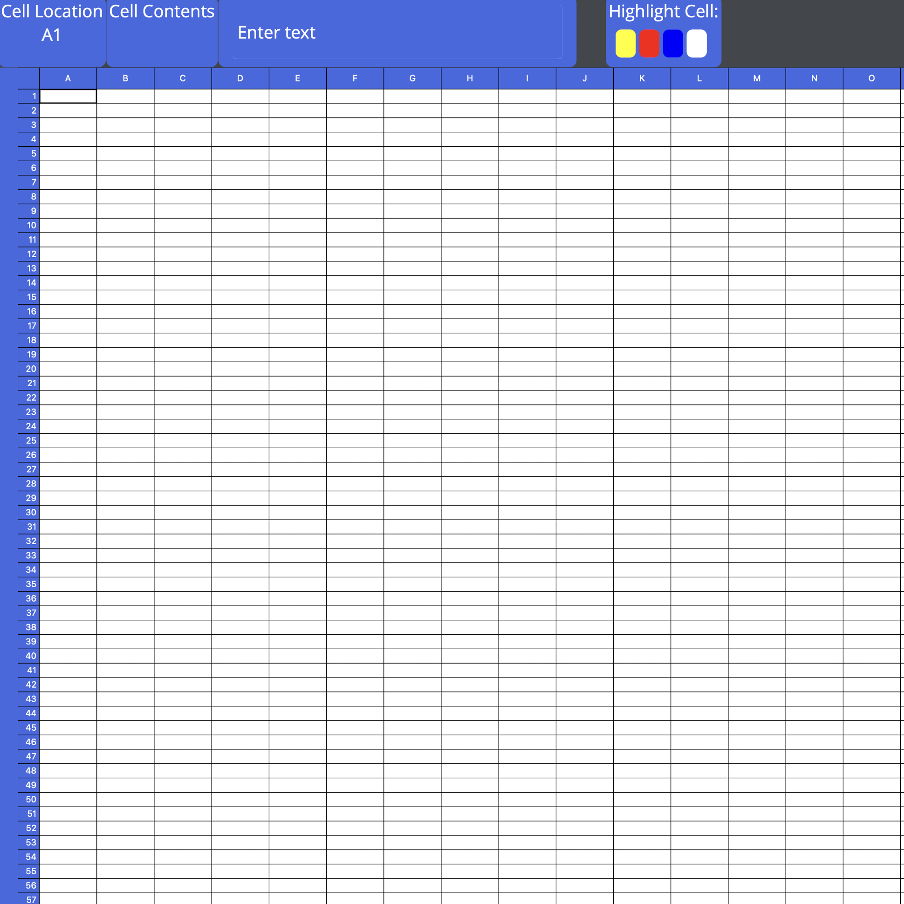

Visual Studio and C#
The 'Spreadsheet' program boasts a range of functionalities that make it a versatile data manipulation tool. Users can populate cells with text or numerical data, resembling the familiar grid layout of a standard spreadsheet. However, the true magic lies in its formula support, where users can craft dynamic formulas to automatically calculate values. Similar to Google Sheets, users can input equations, such as '=A1 + B1,' allowing cells to interact dynamically and provide real-time results.
To enhance user experience and data management, 'Spreadsheet' offers essential features for file management. Users can save their current spreadsheet to a file, allowing them to persist their work and return to it later. Moreover, the application supports the opening of different spreadsheet files, facilitating the management of various datasets. For those who need a clean slate, the 'Clear Spreadsheet' function lets users wipe the entire grid, starting afresh with a blank canvas.
The project also recognizes the importance of visual organization. To this end, users can highlight cells with different colors, enabling them to categorize and emphasize specific data points or cells within the spreadsheet. This feature brings a touch of customization and visual clarity to the application, aligning it with user expectations and modern spreadsheet standards.
In summary, the 'Spreadsheet' project is a testament to the power of C# and MAUI, offering a simplified yet efficient alternative to Google Sheets. It provides users with the ability to work with data, create dynamic formulas, manage files, and enhance data visualization through cell highlighting. This personal project showcases a harmonious fusion of development skills and user-centric design, empowering users to handle their data with ease and efficiency.